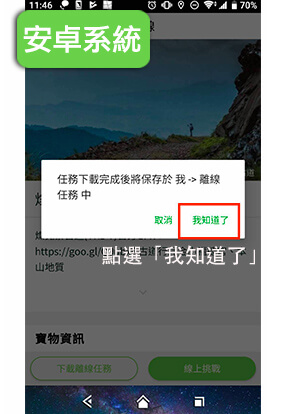

《探‧秘淡蘭》系列活動
【室內講座】淡蘭古道 百年風華
淡蘭古道為清代淡水廳到噶瑪蘭廳的主要交通道路（現今臺北到宜蘭），是先民遷徙、拓墾和聚落發展的交通要道，走過百年歲月，古道原本的功能雖已不再，但沿途遺留下大量文史遺跡，加上蔥蘢蓊鬱的原始林相令人神往，近年來吸引愈來愈多山友踏上這條老祖先走過的路，用雙腳走訪不同世代遺落在山林裡的美麗故事。
欲進古道，必知歷史事。此次邀請四位淡蘭古道達人－千里步道協會副執行長 徐銘謙、台灣山岳文教協會理事 吳雲天、淡蘭古道識別設計師 蕭青陽、自然手繪師 沈恩民四強聯手，以親身經驗與大家分享他們眼中的淡蘭，以及路程中遇見的美景與感動。想要深入認識淡蘭古道的朋友們，千萬別錯過！
一、活動資訊:
- 日期：9月19日(四)
- 時間：晚上19:00～21:30 （18:30即可開始報到）
- 地點：兆基商務中心（台北市中正區和平西路一段15號3樓，捷運古亭站8號出口）
- 費用：免費入場
- 線上報名：請點此報名，額滿為止
二、活動流程:
|
時間 |
講題 |
講者 |
說明 |
|---|---|---|---|
|
18:30 |
聽眾報到、主持人開場 |
||
|
19:00 |
走 ‧ 讀 ‧ 淡蘭 |
徐銘謙副執行長 |
淡蘭百年山徑系統歷史介紹、 地形特色與路況 |
|
19:30 |
行 ‧ 旅 ‧ 淡蘭 |
吳雲天秘書長 |
淺山知識、生態旅遊、舊路特色分享 |
|
20:00 |
美 ‧ 攝 ‧ 淡蘭 |
蕭青陽老師 |
以藝術工作者的角度，分享在淡蘭路上的所見所感 |
|
20:30 |
手 ‧ 繪 ‧ 淡蘭 |
沈恩民手繪師 |
親山速寫經驗分享，以手繪插畫話說淡蘭 |
|
21:00 |
QA時間，聽眾自由提問 |
||
|
21:30~ |
活動結束 |
||
三、講師介紹:
徐銘謙
- 台灣千里步道協會副執行長
- 步道作家
- 手作步道發起人
- 資深步道師
因為膝蓋痛而走上一條追尋夢幻步道的旅程，先後赴美國阿帕拉契山徑、英國、德國、紐西蘭、日本、冰島等地學習，在台灣發起「手作步道」、「步道學」等運動。 著有《我在阿帕拉契山徑》、《千里步道，環島慢行》、《手作步道》、《向山、遇見最美的山徑（合著）》、《淡蘭古道 北路（合著）》等書。
吳雲天
- 台灣山岳文教協會理事
- 台灣山岳雜誌特約企畫編輯
- 台北市出去玩戶外生活分享協會秘書長
曾於雪霸國家公園擔任高山保育志工十四年，喜愛舉辦淨山活動，著迷於部落原鄉及淺山山村的生活文化，廣邀社會大眾籌組茶山志工隊及里山義工隊，協助山村部落文化傳承及發展生態旅行 著有《向山、遇見最美的山徑（合著）》、《聖稜 雪山脊樑（合著）》、《淡蘭古道 北路（合著）》等書。
蕭青陽
- 淡蘭古道識別系統設計師
- 淡蘭古道系列形象影片執導
- 首位入圍葛萊美獎之華人唱片設計師
2018年受新北市政府觀光旅遊局邀請，執導《淡蘭古道》系列形象影片，並入選首屆世界步道大會影展（World Trails Conference World Trails Film Festival）。
淡蘭古道識別系統亦由蕭青陽老師操刀設計，他以古道上常見的蕨類活化石－侏儸紀時代就存在的雙扇蕨作為設計標誌，完成淡蘭古道網識別系統。
沈恩民
- 2018、2019 千里步道手護地圖
喜歡用畫畫放慢腳步，藉由戶外活動沉浸大自然，對台灣山林的歷史與原住民文化深深著迷。近年參與千里步道、台北市出去玩戶外生活分享協會的工作假期與文史調查活動，用紙筆記錄過程點滴，用畫話訴說山林故事。
經營粉絲頁《MINNAZOO》，分享親山見聞。
【戶外健行】淡蘭古道 無痕山林
秋高氣爽，正是登山好時節！這回The North Face邀請你跟著專業的嚮導團隊，深入認識橫跨數個世代的珍貴歷史遺跡，造訪淡蘭古道上重要的歷史景點；並分享無痕山林七大準則概念，教你如何在親近山林的同時，減少人為環境衝擊！
台灣的東北角，不僅擁有因採礦而繁華一時的聚落，百年徒步山徑－淡蘭古道，也在本區交織出綿密路網；當年它是從淡水廳到噶瑪蘭廳（現今臺北到宜蘭）的主要交通道路，從早期軍事防守、傳遞公文之用，到後期成為民生交通要道，串起了幾代人的故事。如今古道上樹梅坪礦場的紅磚殘牆、燦光寮線的柑仔店遺址，在在令人遙想當年的盛況。這一次，就跟著The North Face一同走進古道，來場人文輕健行吧！
一、活動辦法：
本次健行兵分三路，第一路為「貂山古道線」，第二路為「燦光寮古道線」，第三路為「小粗坑古道線」，各路皆由山野樂活協會之專業嚮導帶領，並在金瓜石勸濟堂大會師。
註：健行路線以安全性高、景點接續順暢為主要考量，途中將串接多條不同古道，並非全程都僅走在淡蘭古道上喔！
二、加碼好康：APP尋寶任務
此外，為增加網友們對登山導航APP的熟悉，減少在山林中樹立人工標誌、落實無痕山林概念，本次活動將搭配【健行筆記APP尋寶任務】，我們將在沿途重要景點埋設線上寶石，只要開啟APP經過寶石埋設點，APP將自動抓取寶石、計算成績。
我們將於行前教你看懂GPX軌跡檔、在山裡不迷途。而且集滿古道上所有寶石，還能參加The North Face戶外好禮抽獎！這麼棒的活動，快來報名吧！
註：報名成功者將收到行前確認函，信函內將提供APP任務載點。
- 日期：9 / 21（六）
- 報名期間：2019/9/5(四)中午12:00~9/12(五) 24:00，額滿為止
- 報名人數：各路限額 50人
- 報名費： 新台幣399元 （含保險）
- 活動贈品：The North Face 限量速乾運動服乙件（參考市價1,680／件）
- 活動贈品採現場報到領取，並請換穿或套於外層，方便嚮導辨識活動成員
XS
S
M
L
XL
2L
胸圍
45
48
50
52
54
56
肩寬
37
40
43
46
48
50
衣長
65
68
70
72
74
78
袖長
17
18.5
19.5
21
22
24
三、活動流程
|
時間 |
內容 |
|---|---|
|
8:40 |
低階-貂山古道線/中階-燦光寮古道線；報到時間：8:30~9:00 高階-小粗坑古道線；報到時間：7:00~7:30 |
|
9:00 |
淡蘭古道風光 |
|
15:00 |
大會師 |
|
15:00 |
出示徽章、領取贈品/大合照 |
|
賦歸 |
|
四、【重要必讀】交通方式
此次健行是A進B出行程，強烈建議搭乘大眾運輸工具。
去程
- 由台北方向，請搭乘台鐵 4148次區間車 (台北站 07：34發車)，集合車站請參閱路線說明
- 由宜蘭方向，請搭乘台鐵 4123次區間車 (宜蘭站 07：18發車)，集合車站請參閱路線說明
去回程
- 於勸濟堂搭乘 國道客運1062公車，至台鐵瑞芳火車站下車，轉乘其他交通工具。
五、合作單位
台灣山野樂活協會
台灣山野樂活協會成立於2009年，嚮導大多是喜歡各式運動的戶外運動愛好者，包括登山、戶外求生、單車、路跑、鐵人三項、攝影、裝備研究...等。爬山則是全體成員的共同興趣。所有嚮導皆經過2個半月密集的嚮導訓練，以及半年以上的嚮導實習。
六、活動注意事項
-
健行筆記、The North Face 得刊登及使用活動內容及照片。
-
本活動贈品恕無法折現或更換其他商品。
-
活動贈品（T裇）採現場報到領取，並請換穿或套於外層，方便嚮導辨識活動成員。
-
本活動於天然山徑舉辦，參加者務必依照嚮導的指示，在安全區域內活動，如發生身體不適狀況，應即向嚮導及主辦單位請求協助支援。
-
主辦單位有修改以上活動內容之權利。如遇雨天、海陸上颱風警報或不可抗力之天然災害，為考量參加者安全，本單位有權宣布取消或調整路線。
-
本活動已投保所有參加者200萬意外旅平險+20萬醫療險，學員務必考量自身之健康狀況，因個人病症疾患(註一)所引起之意外均不在保險範圍內，活動參加者如另有需要，請自行辦理個人人身意外保險等。
註一：不保項目
(1) 個人疾病造成之運動傷害
(2) 因個人體質或自身心血管疾病所引發之症狀，例如：心臟病、心血管症、糖尿病、熱衰竭、脫水等引起之症狀。
-
參加者於參加本活動之同時，即同意接受本活動之活動辦法與注意事項之規範。
-
本活動辦法及相關資訊陸續公佈於網站；若有未盡事宜，得隨時增補修訂之，並以活動單位發佈消息為準。
【無痕山林】淡蘭古道 尋寶任務
什麼，淡蘭古道上有寶物？
是的！不論是樹梅坪礦場的紅磚殘牆、燦光寮鋪旁的柑仔店遺址，在在都是橫跨數個世代的珍貴寶藏。但我們這次不靠路標、布條指引你去尋寶，而是利用APP導航，不在山林中樹立人工標誌，落實無痕山林概念！
The North Face攜手健行筆記，在淡蘭古道沿途的歷史景點埋設線上寶石，只要下載健行筆記APP、進入「北面淡蘭古道尋寶任務」，即可看到路線GPX軌跡檔以及寶石埋設點，跟著GPX軌跡走，不僅不怕迷路，也不會錯過沿途重要景點！而凡是經過寶石埋設點，手機即會自動抓取寶石並累計成績；取得步道上所有寶石，即可獲得線上成就徽章，並參加The North Face好禮抽獎！
到底該去哪些步道拿好禮？怎樣才算完成任務？快手刀參閱「任務怎麼玩」吧！
額外回饋：APP任務將紀錄每位山友實際行走的里程數，而你每走1公里，The North Face就捐出1元予千里步道協會，支持協會持續推動淡蘭古道的手作步道修護，維護你曾走過的土地。
任務怎麼玩
STEP 1
下載健行筆記APP
按照以下指示，下載健行筆記APP挑戰「北面淡蘭古道尋寶」任務。只要你收集到步道上的所有寶石，就可獲得任務徽 章。每完成一條步道，即可獲得一次的抽獎機會喔！
安卓系統下載點：bit.ly/2KLrdp3
iOS系統下載點：apple.co/2KLs3Cd
下載之後不知如何註冊？來看操作影片！
STEP 2
點選參加任務
1. 進入尋寶石任務頁面
2. 找到想挑戰的步道並下載離線任務
找到想挑戰的步道後（圖示以貂山步道為範例），請務必「下載離線任務」。離線任務除了省電之外，可避免在山中網路訊號不佳，造成無法閱讀地圖的狀況！
STEP 3
下載完成，開始挑戰
安卓與iOS在步驟三的介面上有些不同，以下分為二個系統做說明。
一、 安卓系統
1. 離線任務下載完成

2. 找尋剛下載的離線任務
離線任務下載完成後，返回到「我」頁面，就可找到剛剛下載的離線任務。

3. 下載地圖
若之前沒下載過魯地圖的話，要先點選下載。顯示完成後，點選開始。若之前就已下載過地圖，就無需重新下載，但可視情況更新地圖。
二、 iOS系統
1. 離線任務與地圖同時下載完成
2. 找尋剛下載的離線任務
離線任務下載完成後，返回到「我」頁面，就可找到剛剛下載的離線任務。
STEP 4
開始與結束任務
你將可在手機上看到步道地圖、路線GPX軌跡檔以及寶石的位置。只要你接近寶石埋設點，APP就會自動抓取步道上的寶石，並發出震動及提示音，告訴你已經集到一顆寶石！收集完所有寶石後，請按兩次紅色鍵（暫停鍵與停止鍵）來結束任務。
此步驟強烈建議將手機開啟飛航模式！即使在沒有網路的情況下，只要GPS永遠開啟，就可以抓寶石唷！

STEP 5
上傳軌跡GPX完成任務
結束任務後，回到有訊號地方，開啟網路，再將當日軌跡GPX上傳，才算真正完成尋寶石任務喔！

提醒：需尋獲該步道所有寶石，才能算是完成任務喔！沒有拿到寶石或是寶石數量不足，上傳之紀錄不予列入抽獎名單！
抽獎獎項
首獎
The North Face GORE-TEX 防水防風衝鋒外套
- 頂尖防水材質GORE-TEX，輕薄、堅固耐久的保護
- 拉鍊式可拆卸設計，可與部分The North Face內裡搭配穿著
- 可調節繩扣的防風帽設計，也可塞入領內隱藏式收納
- 定價：10,360元
- 數量：1件
尺寸隨機出貨，不可指定
二獎
The North Face 防潑水可收納式風衣外套
- 防風防潑水面料，採DWR防潑水處理
- 透氣快乾，且能阻塵、阻油，保持表面潔淨
- 可收納式口袋設計
- 定價：3,880元
- 數量：1件
尺寸隨機出貨，不可指定
註：上圖手機僅為收納尺寸比對示意，本獎項不含手機
三獎
The North Face 環保速乾戶外長褲
- 柔軟快乾的DUPONT SORONA環保面料
- 多口袋設計，實用又時尚有型
- 內嵌式可調節腰帶、彈力收縮褲口，活動靈活自如
- 定價：3,880元
- 數量：1件
尺寸隨機出貨，不可指定
四獎
The North Face FLASHDRY LOGO口袋彈性短上衣
- 吸溼排汗面料，兼具快乾與調節溫度之機能
- 領後附耳機環設計，可插入耳機線
- 定價：1,980元
- 數量：2件
尺寸隨機出貨，不可指定
抽獎日期
本活動期間9～10月，並於10/28（一）抽出得獎名單，詳細說明請見以下：
【抽獎說明】
• 抽獎日期：2019/10/28（一）
• 抽獎資格：凡於9/12～10/27完成任務，且獲得任務徽章者。
※ 註：每完成一條任務獲一次抽獎機會
【得獎公告方式】
請在公告當日14:00，打開健行筆記APP，並進入【北面淡蘭古道尋寶任務】活動頁面，活動內會出現「中獎名單」鈕，按下按鈕即可檢視是否中獎。
【中獎資料回傳】
若您中獎，點選該活動頁面的「中獎名單」鈕時，即會收到中獎通知，並要求您提供寄件資訊。得獎者須於指定期限內回填資料，逾期視同放棄權利。
※ 得獎回填截止日：11/04（一）
※ 獎品將於資料回填截止日後的14個工作天內寄出，請各位得獎人注意收件狀況喔！
捐款說明
• 緣起：綠色計劃
The North Face自2018年起，與健行筆記聯手推動「綠色計劃」系列活動，旨在以實際行動響應無痕山林、步道維護等環境永續之活動。
暨2018年的北面無痕山林體驗日，2019年初的北面手作步道體驗營、北面淨山特派員募集，今年秋季，我們推出「探．秘．淡蘭」系列活動，其中包含了淡蘭古道講堂、無痕山林活動，以及APP尋寶任務。我們希望以「手機定位遊戲」加上「古道文化探索」二大元素，將無痕山林概念結合登山安全推廣，讓大家在LNT的原則下，更安全地進行深度山林探索，Never Stop Exploring！
• 捐款說明
而在本次的APP尋寶任務中，我們將實際紀錄每位山友實際行走的里程數，你每走1公里，The North Face就捐出1元予千里步道協會，支持協會持續推動淡蘭古道的手作步道修護，維護你曾走過的土地，以達成綠色計劃「永續步道」之目的。 任務於10/27結束，我們將於任務結束後結算總里程數，並在11/1完成劃撥捐款。